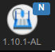
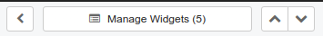
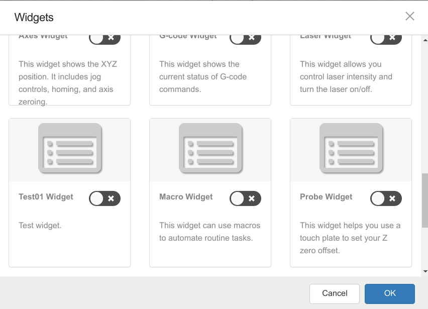
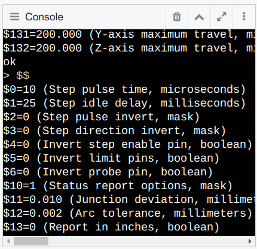

July 2, 2023
Tried to start cncjs, did not work:
npm run start-prod
leads to error during compile
Error: error:0308010C:digital envelope routines::unsupported
at new Hash (node:internal/crypto/hash:71:19)
and when opening URL
Error: Failed to lookup view "index.hbs" in views directories "/media/data/github/cncjs/dist/cncjs/app" or
"/media/data/github/cncjs/dist/cncjs/server/views"
Noticed that in the ouput, it said:
Node.js v19.2.0
so used
nvm use 14
after that, it worked again.
July 7, 2023
Copied the working cncjs folder to cncjs_1_10_1_AL
ran yarn - works.
started server - works.
started app - works.
The app displays the version in the top-left corner:
Modifying the code
The file ./package.json as well as ./src/package.json contain the line
"version": "1.10.1",
When I change this line to
"version": "1.10.1-AL",
and rebuild the project, the change should be reflected in the app.
I tried
yarn
and
yarn rebuild
and the change was not reflected in the app running in the browser, even after reloading.
Checking the file
./dist/cncjs/package.json
shows that the original line is still in the package.json file.
However:
the file ./package.json contains a scripts section, and this section contains the line
"build": "yarn run build-prod",
Running
yarn build
causes the project to be rebuilt.
Now the file
./dist/cncjs/package.json
is changed to the new version string,
and the change is reflected in the app.
Have to change node version or error:
nvm use 14
and
bin/cncjs
leads to

Adding the Autolevel widget
Two strategies:
The first method is based on creating a separate React app that communicates with cncjs through the
network
but how does it send data between the widget and the running cncjs?
Going to use the second method for now, since I already have the code.
Tried to just copy the code and run, but didn't work.
One approach is to clone a widget, such as laser to Test01, and
then compile the code and see if it still runs. If it runs, modify it
and restore previous source code state if run time error occurs.
To identify in which files the code for laser is contained:
change to ./src/app folder
grep -r -i laser *
The files are (without language translation files):
containers/Workspace/WidgetManager/WidgetManager.jsx
containers/Workspace/Widget.jsx
store/defaultState.js
widgets/Laser/index.jsx
Steps
Copy the folder widgets/Laser to folder widgets/Test01
rename widgets/Test01/Laser.jsx to widgets/Test01/Test01.jsx
in file widgets/Test01/Test01.jsx
rename class Laser to class Test01
in file widgets/Test01/index.jsx
rename class LaserWidget to class Test01Widget
change import Laser from './Laser'; to import Test01 from './Test01';
change <Laser to <Test01
in file containers/Workspace/Widget.jsx
add line import Test01Widget from 'app/widgets/Test01';
in function getWidgetByName, add 'test01': Test01Widget,
in file containers/Workspace/WidgetManager/WidgetManager.jsx
in function widgetList, duplicate array element from laser to test01
in file store/defaultState.js
add 'Test01' to secondary widgets
copy laser section under
'widgets: {'
and rename to test01
Result:


July 9, 2023
Verifying that we can modify the code
Switched to version 1.10.3 (latest version)
Modifying the version string in ./package.json no longer works - leads to an error.
Instead, we can add a string in the file
./src/app/containers/Header/Header.jsx
that will then be displayed in the web page
right after the img tag
July 10, 2023
Started copying AutoLevel from cncjs_1_10_0_AL to cncjs_1_10_3_AL.
The widget shows up correctly, and gcode for probing is generated and can be run,
The results from probing are not showing up in the widget yet
(more modules have to modified)
When trying to sync new code to github, an error appears.
Running
yarn eslint-debug
displays a number of errors.
After changing indent as requested by eslint
https://stackoverflow.com/questions/34174207/how-to-change-indentation-in-visual-studio-code
and commenting unused variables
git commit and push worked.
July 11, 2023
Capture Probing event from Serial Port
Which other files have to be modified?
The file
./src/server/controllers/Grbl/GrblController.js
has the code that communicates with the GRBL device through the serial port.
Comparing the file from cncjs_1_10_0_AL and cncjs_1_10_3_AL
from line 134, we add to line 134
log.debug("GrblController constructor");
and the message will be printed in the terminal window that runs the server.
cncjs_1_10_3_AL online 588, we replace
this.runner.on("parameters", (res) => {
this.emit("serialport:read", res.raw);
});
with cncjs_1_10_0_AL on line 567
this.runner.on("parameters", (res) => {
// atmelino
log.debug("parameters: " + JSON.stringify(res));
const probingData = {
type: "probing",
printed: false,
result: res.value,
};
//this.emit('serialport:read', 'parameters');
this.emit("serialport:read", probingData);
this.emit("serialport:read", res.raw);
});
Every time I change a jsx file, eslint complains about double quotes.
https://stackoverflow.com/questions/29312957/how-to-tell-eslint-that-you-prefer-single-quotes-around-your-strings
Adding this to rules in ./.eslintrc.js fixes it:
rules: {
"quotes": [1, "double", {
"avoidEscape": false,
"allowTemplateLiterals": true,
}],
To verify that the GRBL controller responds:
$$ - View Grbl settings
https://github.com/gnea/grbl/wiki/Grbl-v1.1-Configuration
In the console widget, run
$$

new gitignore in widgets ignores css files, causes yarn build error because of react-table.css in AutoLevel
widget.
July 12, 2023
Got error in applying probedata file from actual probing, whereas simulated probind data file worked.
Cause is that actual probedata saves numbers with quotes, therefore is interpreted as string.
July 18, 2023
Problem: probing returns x and y as the machine positions, which are not the same as the probing positions.
Solution:
AutoLevel.jsx has access to the variable state which contains work position
Example:
AutoLevel.jsx
state {
"minimized": false,
"isFullscreen": false,
"canClick": true,
"port": "/dev/ttyACM0",
"controller": {
"type": "Grbl",
"settings": {
"version": "1.1g",
"parameters": {},
"settings": {
"$0": "10",
"$1": "25",
"$2": "0",
"$3": "0",
"$4": "0",
"$5": "0",
"$6": "0",
"$10": "1",
"$11": "0.010",
"$12": "0.002",
"$13": "0",
"$20": "0",
"$21": "0",
"$22": "0",
"$23": "0",
"$24": "25.000",
"$25": "500.000",
"$26": "250",
"$27": "1.000",
"$30": "1000",
"$31": "0",
"$32": "0",
"$100": "250.000",
"$101": "250.000",
"$102": "250.000",
"$110": "1000.000",
"$111": "1000.000",
"$112": "500.000",
"$120": "10.000",
"$121": "10.000",
"$122": "10.000",
"$130": "200.000",
"$131": "200.000",
"$132": "200.000"
}
},
"state": {
"status": {
"activeState": "Idle",
"mpos": {
"x": "0.000",
"y": "0.000",
"z": "0.000"
},
"wpos": {
"x": "7.000",
"y": "7.000",
"z": "0.000"
},
"ov": [100, 100, 100],
"subState": 0,
"wco": {
"x": "-7.000",
"y": "-7.000",
"z": "0.000"
},
"feedrate": 0,
"spindle": 0
},
"parserstate": {
"modal": {
"motion": "G0",
"wcs": "G54",
"plane": "G17",
"units": "G21",
"distance": "G90",
"feedrate": "G94",
"spindle": "M5",
"coolant": "M9"
},
"tool": "0",
"feedrate": "0",
"spindle": "0"
}
}
},
"modal": {
"name": "widgets/AutoLevel:MODAL_NONE",
"params": {}
},
"startX": 5,
"endX": 75,
"startY": 5,
"endY": 65,
"stepX": 10,
"stepY": 10,
"feedXY": 300,
"feedZ": 20,
"depth": 3,
"height": 2,
"probingObj": [],
"probingMatrix": [],
"ALgcode": [],
"units": "mm",
"machinePosition": {
"x": "0.000",
"y": "0.000",
"z": "0.000"
},
"workPosition": {
"x": "7.000",
"y": "7.000",
"z": "0.000"
},
"customDistance": null
}
We are using
state.controller.state.status.wpos.x
state.controller.state.status.wpos.y
and now the probing results are correct.